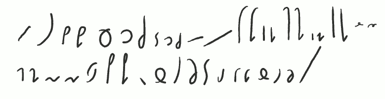
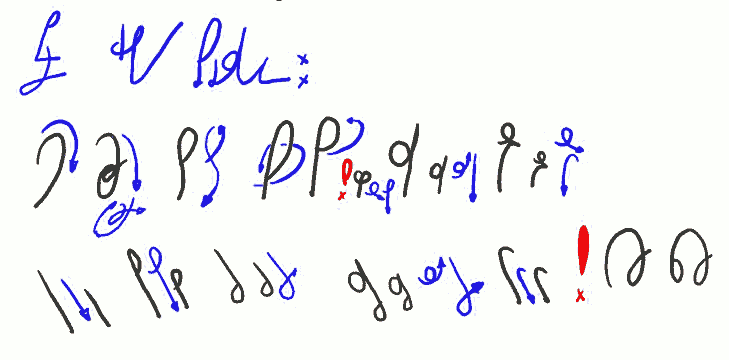
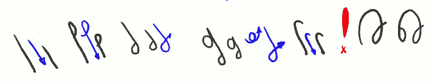

International
InternationalKurs SteMi - Lekcja 03
2013-03-12 | autor: flamenco108Witam w lekcji nr 03 kursu SteMi.
Lekcję tę zaczniemy od małej powtórki, czyli listy podstawowych liter alfabetu SteMi:

Lista podstawowych znaków czyli liter:
A E I O U Y Ą Ę
K GKI GIP BPI BIH MHI MIN Ń
F WFI WIT D
S Z LR SZ Ż
C DZ ŁĆ DŹCZ DŻ \
A oto znaki SteMi w kolejności, w jakiej przyzwyczailiśmy się recytować je w szkole podstawowej:

A Ą B B' C Ć CZ D DŹ DŻ E Ę F F' G G' H H' I J(I) K K' L Ł
M M' N N' O(O) P P' R S Ś SZ T U W W' Z Ź Ż Y
Jak widać, kiedy postawi się je w “tradycyjnej” kolejności, podobieństwa już nie są tak bliskie…
Skoro jest to powtórka, to zaznaczę raz jeszcze: SteMi jest systemem sylabicznym. To znaczy, że kiedy już wyłożę tu podstawy pisma, bez problemu będzie można nauczyć się pisać z prędkością przeliczalną wg wzoru: 1 sylaba = 1 znak. Czyli na pierwszym etapie nauki systemu zgłębiamy sztukę budowania sylab języka polskiego. Jest to odmienne podejście od szkolnego. Niezbędne wobec utrwalonych głęboko nawyków.
Kiedy zaczniecie pisać w SteMi, najpierw nauczycie się dzielić wyrazy na sylaby. Bo w wersji tak zwanej nieskróconej, czyli takiej, w której technik czysto stenograficznych używa się bardzo rzadko lub zgoła wcale, systemu SteMi, poszczególne znaki buduje się sylabami. A to dlatego, że myśląc, jak napisać “Brzęczyszczykiewicz”, czy może “Wzdręgaprztyśćnicki”, układamy wyraz sylaba po sylabie. Czyli najpierw zastanawiamy się, jak napisać “Brzę-”, potem łatwe “czy”, “szczy”, “kie”, “wicz”. “Wzdrę-”, “ga”, “prztyść”, “nic” i wreszcie “ki”. I zrobione. Jeżeli powoli nam idzie, możemy te sylaby postawić jedna za drugą, bez łączenia ich w jeden wyraz. Mózg nasz i tak się połapie, a nawet będzie mu łatwiej to później odczytać.
Powyższa wskazówka ma zastosowanie także do pisania wyrazów, które dopiero poznajemy, ewentualnie wyrazów obcojęzycznych, których napisania uniknąć nie możemy.
Poniżej pierwsze grupy spółgłoskowe:

Pierwsze grupy spółgłoskowe:
ŚĆ SZCZ ST SP(SP) ! ZB SK ZG SF ZW
KSZ GRZ PRZ BRZ TRZ DRZ STRZ ZDRZ WSZ WRZ !
wszech-zawsze
Grupy spółgłoskowe, czyli wielodźwięki (polifony?) ze spółgłosek. Bardzo często występują w naszej Mowie Ojczystej i nic na to nie poradzimy.
ŚĆ (teść, ścierka, ściółka) powstało z powiększenia Ć lub połączenia Ć z Ś, albo…
… Technikę tworzenia znaków alfabetu SteMi omówię w dalszych rozdziałach (lekcjach).
Znak SZCZ (deszcz, szczelina) to nieco powiększone SZ oraz dodatkowy zawijas podczas kreślenia pętelki.
Znak ST (bardzo często występuje!: test, stacja, stolica…) to pętla S przed napisaniem T. Tak samo tworzy się nie pokazaną grupę ZD. Znak SP (Sparta, wesprzeć, wyspa) to powiększona pętla P. Można ją powiększać wg uznania, byle piszący (lub inny adresat) mógł to później odczytać.
Uwaga! Grupy SP używa się także do zapisu brzmienia ŚP (pośpiech, śpiew)!
Uwaga! Grupa ZB (zbierać, pozbyć) pisze się inaczej, tj. Z “dokleja” się do B, co widać na malutkim przykładzie powyżej.
Tą samą metodą łączy się grupę SK (skok, troska) oraz ZG (zgasić, rózga). Podobnie, choć nie identycznie, łączy się grupy SF (SW - swój, swędzi) oraz ZW (zwada, pozwany).
Innymi słowy, grupy spółgłoskowe starałem się zdefiniować tak, aby były możliwie podobne do zgrabnych i czytelnych połączeń odpowiadających im głosek składowych. Jednocześnie wybrane zostały różne sposoby łączenia (zlewanie - ŚĆ, ST, ZD powiększanie i zniekształcanie - SZCZ, SP, dopisywanie - ZG, SK, ZG, nadpisywanie - SF, ZW), a to dlatego, aby ułatwić później odczytanie stenograficznych bazgrołów. Im więcej informacji zostanie ukryte w znakach, tym łatwiej później czytać. Zapamiętać zatem należy, że w przeciwieństwie do pisma długiego, w systemie SteMi istotne jest nie tylko, jak wygląda litera, ale również w jaki sposób łączy się z następną.
Poniżej omawiam wyjątkową (choć nie całą) grupę grup spółgłoskowych. Widać ją też na ilustracji powyżej, ale teraz patrzymy się poniżej:

KSZ GRZ PRZ BRZ TRZ DRZ STRZ ZDRZ WSZ WRZ ! wszech-zawsze
Nazwijmy to roboczo i z rosyjska “uszypiaszczeniem”. Czyli mówimy o grupach spółgłoskowych, gdzie głoska łączy się z SZ (bezdźwięczne), lub Ż* (dźwięczne).
Uwaga! Warto zwrócić uwagę, że zwykle w języku polskim połączenie głoski bezdźwięcznej z dźwięczną skutkuje ubezdźwięcznieniem takiej grupy spółgłoskowej! Będzie to miało wpływ na możliwości twórczego łamania ortografii systemu SteMi podczas szybkiego pisania, bez szkody dla czytelności. Im lepiej znamy nasz język, tym łatwiej w nim pisać i czytać.
Metoda uszypiaszczenia grupy lub głoski polega na pochyleniu jej w lewo, tj. przeciwnie do kierunku (poprawnie byłoby “zwrotu”, ale nikt tak nie mówi) pisma. Stopień pochylenia zależy od uznania piszącego.
Powyżej pokazane sąniektóre litery, które podlegają tej regule. Tak samo zapiszemy np. CHRZ (chrzan) i MSZ (msza)/MŻ (mżawka). Brzmienie MŻ grupy występuje znacznie częściej. Stosuje się ją też do powiązanych grup spółgłoskowych, czyli np. SKRZ (skrzek, skrzyp), ZGRZ (zgrzybieć, zgrzew), SPRZ (sprzedać wesprzeć), ZBRZ (zbrzydnąć), WSTRZ (wstrzelić, wstrzyknąć).
Zapisanie w tabeli wszystkich grup spółgłoskowych jest zadaniem na oddzielną lekcję tego kursu.
Uwaga! Jeżeli podczas pisania wyrazu sądzimy, że uszypiaszczona (lub dowolna inna) grupa może się stać nieczytelna (np. w wyrazie “komża” lub “Łomża”), zawsze możemy użyć mniej wygodnego w zapisie, lecz znacznie czytelniejszego połączenia przez zestawienie (np. M+Ż w wyrazie “komża” lub “Łomża”).
Na końcu zestawienia, po czerwonym wykrzykniku, widać dwa nowe znaczniki: -WSZECH- i ZAWSZE. Wyraz “zawsze” jest nieodmienny i nie skleja się z innymi. Łatwo ten znak zapamiętać i używać. Znacznik -WSZECH- używany jest przede wszystkim dla oddania (po dopisaniu końcówki gramatycznej) słowa “wszystko”. Przy zastosowaniu zgodnym z brzmieniem (np. powszechny, Wszechświat), pisze się go bez sklejania z resztą sylab wyrazu. Sylaba poprzedzająca (np. PO-) zawsze pisana jest oddzielnie. Sylaba następna (np. -NY) może być pisana łącznie, jeżeli nie zagraża to czytelności wyrazu (w wypadku słowa “powszechny” nie zagraża).
Do zobaczenia w lekcji czwartej!
2013-03-12 autor: flamenco108